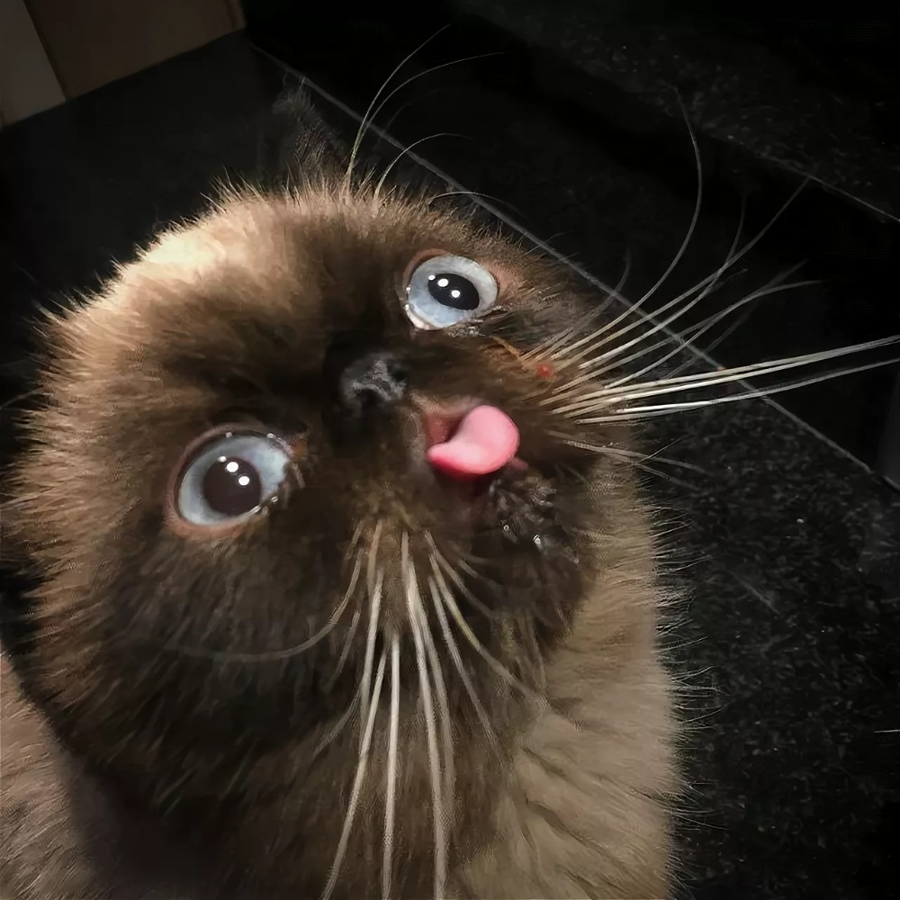
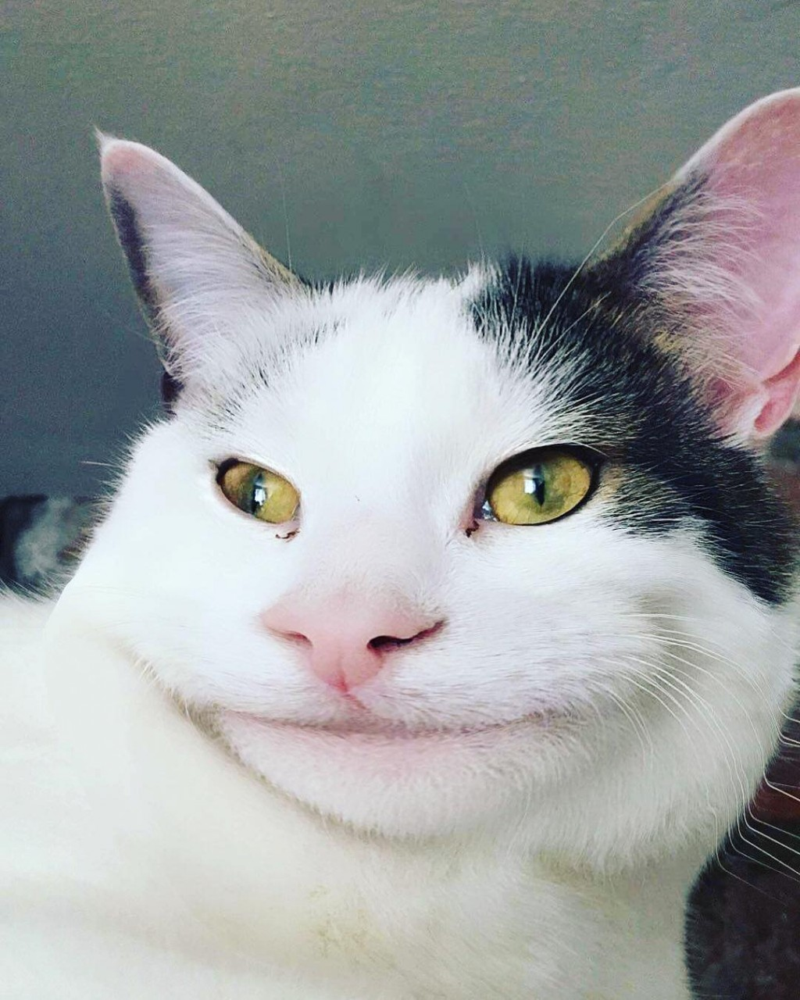
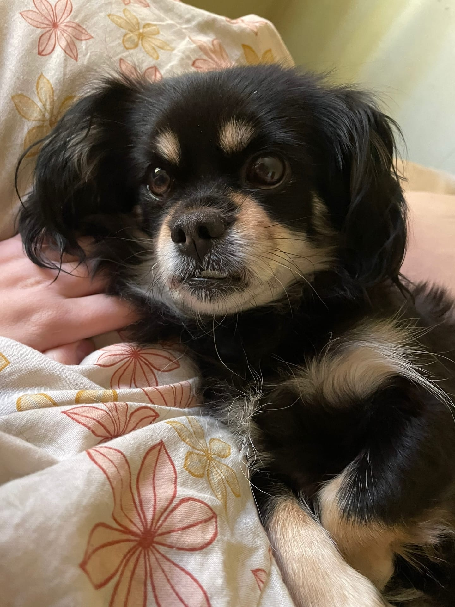

Котики бывают совершенно разные. Они различаются по породам, по размерам и нраву. Если вам интересно узнать о породах котиков, эта страница вам не подходит, лучше воспользуйтесь википедией. Здесь я расскажу о другой классификации котиков.
На самом деле, этот список можно продолжать бесконечно, но я закончу на последнем бонусном котике. Возможно, она выглядит как собака, но в душе она самый настоящий котик.
